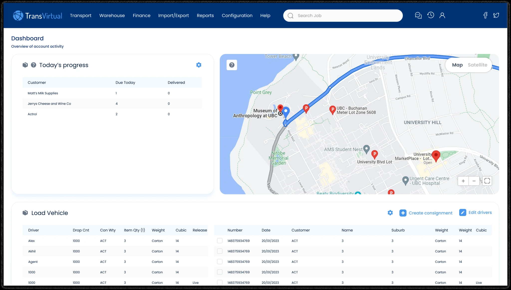
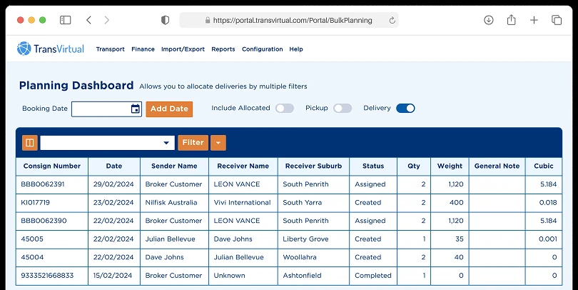
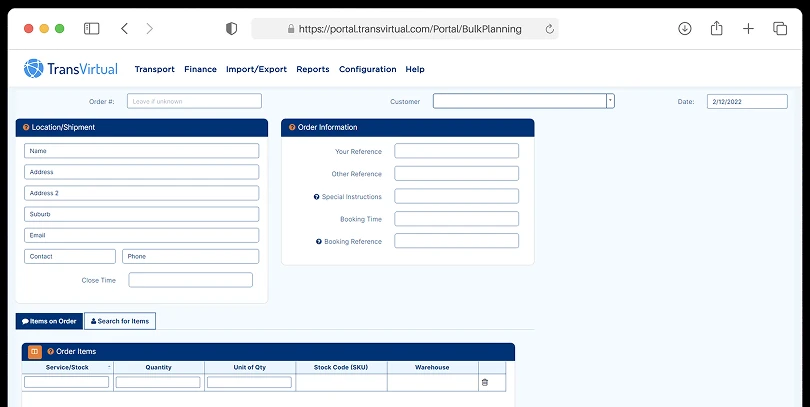
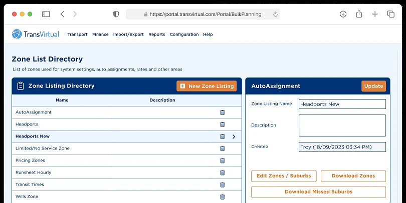
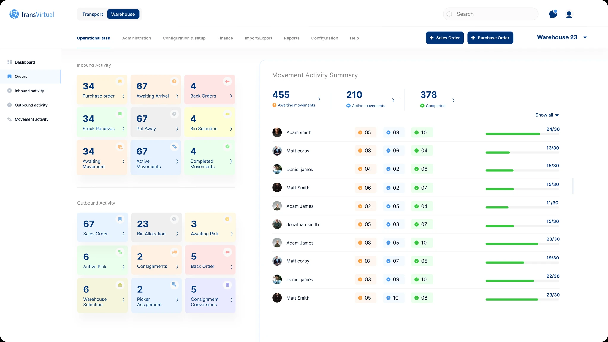
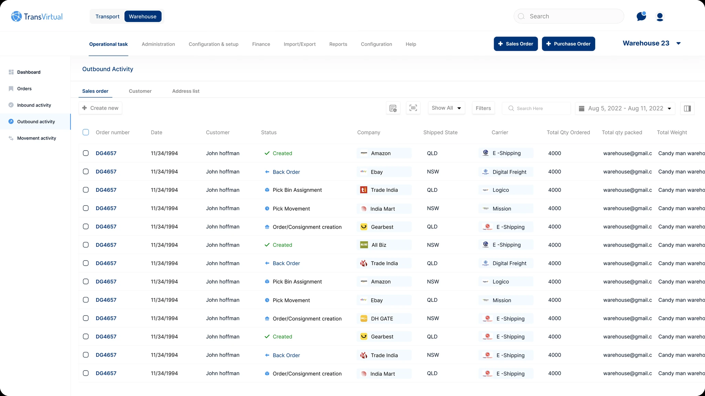

User pain points
Interviews and feedback exposed the moments where people hesitated, backtracked, or relied on memory.
Case study / 01Logistics SaaS
TransVirtual
A redesign of a mature logistics platform focused on making frequent operational tasks easier to find, understand, and complete.

01 / Context
What needed to changeTransVirtual was already a powerful logistics product. The opportunity was to make that power more accessible to the dispatchers, fleet teams, and operators using it under time pressure.
The platform supported complex work, but dated navigation, dense layouts, and fragmented task flows made routine operations harder than they needed to be.
The design mission was straightforward: preserve the operational depth while reducing the effort required to move through it.
Core tools competed for attention across menus and inconsistent pathways.
Frequent actions required more clicks and context switching than necessary.
Operational data lacked a strong hierarchy for scanning and decision-making.
Similar workflows behaved differently, increasing the learning burden.
Three parts of the earlier experience: planning, order entry, and zone configuration.



02 / Discovery
Finding the real frictionI combined user conversations, workflow analysis, product evidence, and recurring complaints to understand where the interface was slowing operational work.
Interviews and feedback exposed the moments where people hesitated, backtracked, or relied on memory.
Frequent delivery and warehouse tasks were mapped from entry point to completion to reveal unnecessary steps.
The redesign focused first on navigation, task management, and the information needed for fast decisions.
03 / Design direction
From chaos to clarityThe work moved from structure to interaction and then visual refinement, keeping operational logic intact while making it easier to navigate.
Menus were reorganized around frequent tasks, unnecessary paths were removed, and important destinations became easier to predict.
Complex activities were reframed as understandable sequences with stronger grouping, fewer steps, and clearer system feedback.
Dashboards and data-heavy screens were structured around status, urgency, and the next decision an operator needed to make.
04 / Outcome
Efficiency deliveredThe final direction retained the platform’s depth while making its everyday workflows more direct and legible.
Common destinations and frequent actions became easier to locate.
More direct workflows supported improvement in task-completion time.
Stronger hierarchy made dense operational data easier to scan.
Reusable patterns reduced the learning burden across the product.
One connected operating system across the dashboard, movement activity, and outbound work.


The strongest outcome was not a visual refresh in isolation. It was an interface system that helped users understand where they were, what required attention, and what to do next.